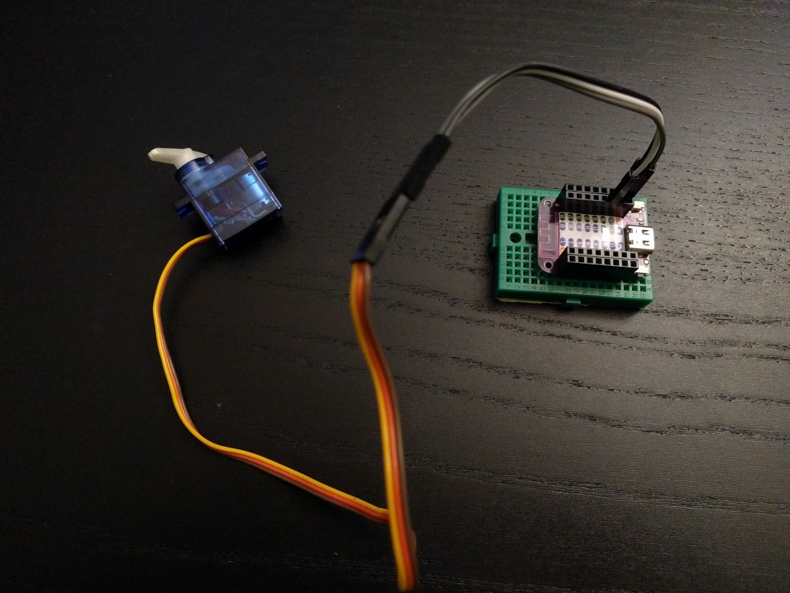

Selecting Pins¶
Published on 2021-09-23 in Fluffbug.
Before I finish the new PCB I need to make some decisions. In particular, I need to decide which pins of the microcontroller are going to be used for what. At the minimum I will need eight pins for controlling the servos, so let’s start with that and see which ones are suitable for that.
I connected a servo to he development board, and created a PWM object on one of the pins, with 50Hz signal and duty cycle of about 4000 — that is close to the center of the servo position. It worked at first try. Some more tests let me conclude that I an use any of the pins for the servos, but I can only create eight PWM objects at a time, which is just enough, but which means I won’t be able to use PWM for the speaker or for any LED fading or things like that, which is a bit of a shame. I might reconsider adding the speaker.
But there is one more constraint that I need to consider: I would really want to have a camera shield for this robot, with the OV2640 camera. And it would be bad if any of the pins I picked for the servos were required for the camera. So I need to figure out which pins are needed for the camera. For this I have turned to Adafruit’s Learn Guide on the subject . And again, it looks like I can use pretty much any pins there, as long as there are enough of them available. Unfortunately, it needs a lot of them — from 14 to 16, depending on whether I want to have control over the reset and shutdown pins. The S2 Mini exposes 26 pins, 27 counting the LED. Let’s see, I will need 8 pins for the servos, 4 for the leg switches, 14 for the camera, that’s 26 exactly already. Ouch.
It seems that it is just doable. We will see.
In the process of this research I also collected the documentation for the OV2640 camera sensor and what is required for building a camera shield for the S2 Mini — but that is going to be a separate project.